In diesem Kapitel erhalten Sie eine Übersicht über die Vermaßung von Werkzeugen.
Werkzeugtypen
Die folgenden Abbildungen zeigen die Vermaßung von Werkzeugen.
Dabei steht "L1" für die Länge X und "L2" für die Länge Z.
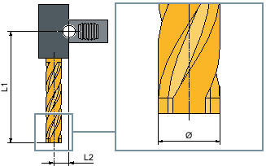Fräser (Typ 120)
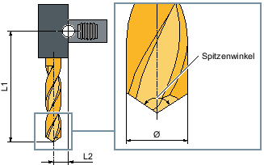Bohrer (Typ 200)
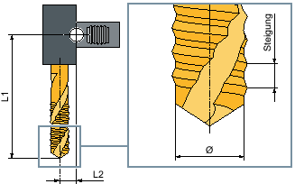Gewindebohrer (Typ 240)
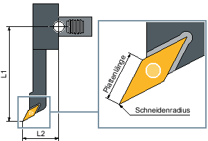Schlichter (Typ 510)
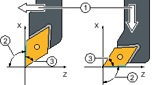① | Bezugsrichtung |
② | Halterwinkel (= 93°) |
③ | Plattenwinkel (= 55°) |
Winkelbeschreibungen Schlichter (Typ 510)
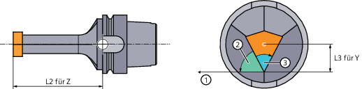① | Bezugsrichtung |
② | Halterwinkel (= 62,5°) |
③ | Plattenwinkel (= 55°) |
Y-Schlichter (Typ 515)
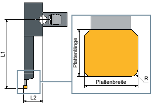Stecher (Typ 520)
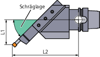Schräger Stecher (Typ 521und 531)
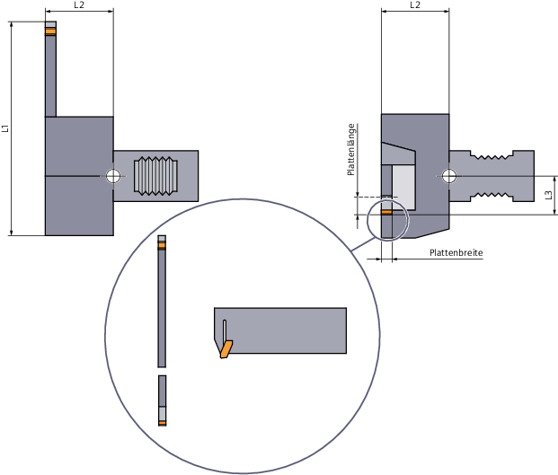Y-Stecher (Typ 525)
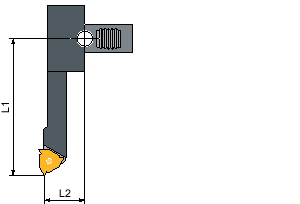Gewindestahl (Typ 540)
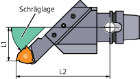Schräger Gewindestahl (Typ 541)
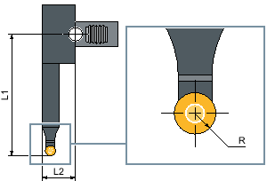Pilz (Typ 550)

① | Plattenwinkel (= 88°) |
② | Halterwinkel (= 90°) |
Drehbohrer (Typ 560)
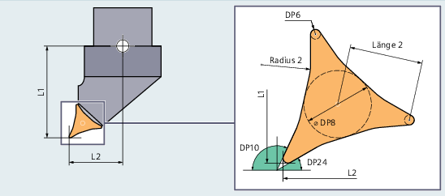Prime A (Typ 570)
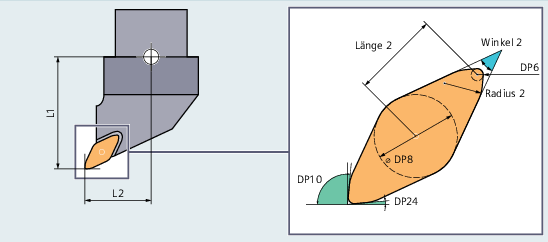Prime B (Typ 571)
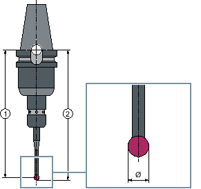① | Länge m |
② | Länge u |
3D-Messtaster (Typ 580)
| Hinweis |
Ein 3D-Messtaster muss vor dem ersten Einsatz kalibriert werden. |
Anschlag (Typ 730)

Winkelkopfadapter
L1, L2, L3 sind Offset Geometrielängen.
| | Maschinenhersteller Die Werkzeuglänge wird bis zum Kugelmittelpunkt oder bis zum Kugelumfang gemessen. Beachten Sie hierzu bitte die Angaben des Maschinenherstellers. |